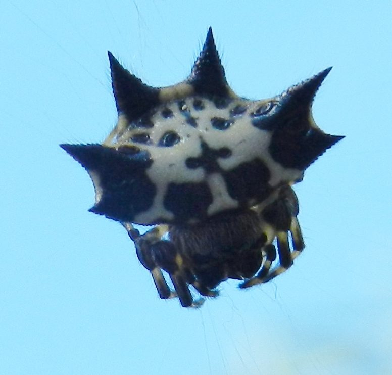

कंटकदार मकड़ीSpiny Orb-weaver
Gasteracantha kuhli · Araneidae · SPD-0014

- Scientific name
- Gasteracantha kuhli C.L. Koch, 1837
- Family
- Araneidae
- Hindi
- कंटकदार मकड़ी
- Status here
- native
- IUCN
- not evaluated
When to look कब देखें
Expected mainly in March, April, May, June, July, August, September, October, November.
कंटकदार मकड़ी / Spiny Orb-weaver
Gasteracantha kuhli C.L. Koch, 1837 — Araneidae
कंटकदार मकड़ी (स्पाइनी ऑर्ब-वीवर / केकड़ा मकड़ी) — पूर्वी उत्तर प्रदेश के उद्यानों, फलों के बागों और कंटीली झाड़ियों में पाई जाने वाली एक अत्यंत आकर्षक, रंग-बिरंगी और अनोखी मकड़ी है। इसकी सबसे बड़ी पहचान इसका केकड़े जैसा सख्त, सपाट पेट (hard, crab-like abdomen) है जिस पर छह प्रमुख, तीखे काले कांटे (six prominent sharp spines) बने होते हैं। मादा मकड़ी का पेट आमतौर पर काले और सफेद रंग के सुंदर पैटर्न से सजा होता है, जिसके कारण यह खिलौने जैसी दिखती है। यह बगीचे के पौधों के बीच हवा में एक छोटा लेकिन बिल्कुल गोल, ऊर्ध्वाधर जाला (vertical orb web) बनाती है। यह अक्सर अपने जाले के केंद्र में बैठती है और जाले के धागों पर सफ़ेद सिल्क से ज़िग-ज़ैग पैटर्न (stabilimentum) बनाती है, जो उड़ते हुए पक्षियों को जाला तोड़ने से रोकने की चेतावनी देता है। यह मनुष्यों के लिए पूरी तरह से सुरक्षित है।
Quick Identification त्वरित पहचान
| Feature | Description |
|---|---|
| Abdomen | Hard, leathery, wider than long, resembling a crab shell; dorsum is white or yellow with black spots and markings |
| Spines | Six sharp, black spines projecting from the margin: two on each side and two at the rear |
| Size | Small spider; female body length 8–10 mm, male is tiny (3–4 mm) and lacks large spines |
| Web Type | Perfect, vertical, circular orb web suspended between branches, often with white silk tufts |
| Position | Sits directly in the open hub (center) of the web during the day |
Field tip: Look between garden shrubs or lower branches of mango trees during the monsoon. Scan for small, perfect vertical webs. Look at the very center of the web; you will find a small, hard, black-and-white spider with six sharp spines sitting upside down. If you touch the web, the spider will remain still rather than running. The female is shown in the field tip.
Morphology आकारिकी
Biometrics (typical measurements of adults in the northern Indian plains showing extreme sexual size dimorphism):
| Measurement | Female | Male |
|---|---|---|
| Body length (excl. spines) | 8–10 mm | 3–4 mm |
| Abdomen width (incl. spines) | 10–12 mm | 4–5 mm |
| Front spines length | 1.5–2.0 mm | 0.2–0.3 mm |
| Rear spines length | 2.0–2.8 mm | 0.3–0.5 mm |
| Average weight | 10–20 mg | 1–2 mg |
Adult Spider:
- Cephalothorax: Small, dark brown to black, largely hidden under the projecting front edge of the abdomen. The legs are short, thick, and black.
- Abdomen (Opisthosoma): The dorsal surface is a hard, flat shield (scutum), chalk-white or light cream-yellow, with 4 rows of dark circular depressions (sigilla) and complex black markings. The margin has six thick, sharp, black spines: two pointing laterally, two pointing backward-diagonally, and two pointing straight backward.
- Male: Extremely small (dwarfism), with a softer, less colorful abdomen and very short, blunt spines, making it look completely different from the female.
Behaviour & Ecology व्यवहार और पारिस्थितिकी
- Vertical Orb Web Construction: Builds a highly resilient, vertical orb web, usually 1 to 2 meters above the ground. The web silk is very strong. Along the radial lines, the spider often adds tiny, visible tufts of white silk.
- Stabilimentum (Web Decoration): It weaves a decorative, zig-zag band of thick white silk (stabilimentum) near the center or edges. Research suggests this serves as a warning signal to flying waders and birds, making the web visible so they avoid flying through and destroying it.
- Diurnal Openness: Unlike most spiders that hide during the day, the Spiny Orb-weaver sits openly in the center of its web in full sunlight. Its hard, leathery body and sharp spines protect it from being eaten by small birds, who find the spines painful to swallow.
Life Cycle / Phenology जीवन चक्र
- Reproduction: Breeds during the late monsoon and autumn (August to October).
- Extreme Dimorphism & Mating: The tiny male approaches the large female on her web by drumming a specific pattern of vibrations on the silk lines to avoid being mistaken for prey.
- Egg sac: The female spins a small, dark green or brown silk egg sac containing 50–100 eggs and attaches it flat against a leaf or branch near the web. She dies shortly after, and the eggs overwinter to hatch in the spring.
Host Plants or Prey आहार
Primary insect prey captured in webs:
- Flying insects: Small flies, gnats, mosquitoes, and fruit flies.
- Pests: Whiteflies, aphids, and small moths like leaf folders.
Predators / Natural Enemies शत्रु
- Parasitic Wasps: Small wasps attack and lay eggs in the egg sacs.
- Large predators: Although small birds avoid them, large praying mantises and geckos can capture them if they climb near branches.
Agricultural / Human Relevance कृषि प्रासंगिकता
Beneficial garden inhabitant. Spiny Orb-weavers are excellent natural insect regulators in vegetable gardens and horticultural orchards (like guava and mango) in Basti. They trap high numbers of flying sap-sucking pests, helping to maintain plant health.
Venom safety: Their venom is highly effective on small insects but is completely harmless to humans. Their short fangs cannot easily pierce human skin, and they are not aggressive.
Expected Locally स्थानीय रूप से अपेक्षित
Not a field record. Written from published accounts for eastern Uttar Pradesh. No confirmed local sighting yet — if you have seen it, that is what the atlas needs.
अभी तक स्थानीय पुष्टि नहीं। यह विवरण प्रकाशित स्रोतों से है, किसी अवलोकन से नहीं।
A common and photogenic resident throughout the Basti district. They are regularly observed in home gardens, plant nurseries, and mango orchards in the Harraiya, Vikramjot, and Basti blocks. Schoolchildren are often fascinated by these spiders, sometimes calling them "Tar-Makdi" or "Kila-Makdi" due to their star-like shape.
Distribution वितरण
Global range: Widespread across South Asia, Southeast Asia, and East Asia.
In India: Common in all states with moist woodland, horticultural, or garden areas.
In Uttar Pradesh: Distributed state-wide in all districts.
In Basti district / eastern UP: Common across all blocks in vegetated plots.
Research Questions शोध प्रश्न
Anyone can investigate these | कोई भी इन प्रश्नों की जाँच कर सकता है
- How many white silk tufts (decorations) are typically added to a single web of a Spiny Orb-weaver? — Count and record decorations.
- Do birds in your garden actively avoid flying into webs decorated with white silk bands compared to plain webs? / क्या आपके बगीचे में पक्षी सादे जालों की तुलना में सफ़ेद सिल्क पट्टी वाले जालों से टकराने से बचते हैं? — Observe bird flight paths near webs.
- What is the ratio of white-colored to yellow-colored abdomens in the Spiny Orb-weaver population in Basti? — Conduct color-morph surveys.
- How long does it take for a Spiny Orb-weaver to rebuild its web after a heavy monsoon rain? — Track web reconstruction times.
- Does the presence of Spiny Orb-weavers in a guava orchard reduce the population count of fruit flies? / क्या अमरूद के बागों में कंटकदार मकड़ी की उपस्थिति से फल मक्खियों की संख्या कम हो जाती है? — Compare insect counts in orchards with and without spiders.
Similar Species मिलती-जुलती प्रजातियाँ
| Species | How to tell apart | comparison |
|---|---|---|
| Social Velvet Spider (Stegodyphus sarasinorum) | Dull grey-brown body; lacks spines; lives in large social groups within sheet-webs | सामूहिक मकड़ी — मखमली भूरा शरीर, समूह में रहना |
| Yellow Sac Spider (Cheiracanthium melanostomum) | Pale yellow-green; lacks spines; does not build webs; hunts at night | पीली थैली मकड़ी — पीला-हरा शरीर, जाला नहीं |
| Signature Spider (Argiope anasuja) | Much larger; silver-and-yellow striped body; builds large vertical webs with a bold X-shaped silk cross | हस्ताक्षरी मकड़ी — बड़ा आकार, एक्स-आकार की पट्टी |
Field rule: Small, hard, flat-bodied spider (8–10 mm) with a white/yellow top bearing six sharp black spines, sitting in the center of a vertical orb web, is the Spiny Orb-weaver.
Taxonomy & Classification वर्गीकरण
Original description. Carl Ludwig Koch described the Spiny Orb-weaver as Gasteracantha kuhli in 1837 in his Die Arachniden (Vol. 4, p. 20). The type locality was listed as Java. The genus name Gasteracantha is derived from the Greek gaster (belly/abdomen) and akantha (spine), referencing the spined abdomen. The specific name kuhli honors the German naturalist Heinrich Kuhl.
Subspecies. Monotypic — no subspecies are currently recognised.
Family and order placement. Placed in the order Araneae, infraorder Araneomorphae, family Araneidae (orb-weavers), subfamily Gasteracanthinae.
Phylogenetic notes. Gasteracantha is a highly specialized genus of sclerotized (hard-bodied) orb-weavers, exhibiting unique morphologic adaptations to reduce avian predation in tropical forest canopies.
IUCN status rationale. Not evaluated (NE) by the IUCN Red List. It has a highly secure and stable population.
Photo Gallery फोटो गैलरी
References संदर्भ
- Koch, C. L. (1837). Die Arachniden. Nürnberg, Vol. 4, p. 20. [original description]
- Tikader, B. K. (1982). Fauna of India: Spiders: Araneae. Vol. II. Zoological Survey of India, Calcutta.
- Sebastian, P. A. & Peter, K. V. (2009). Spiders of India. Universities Press, Hyderabad.
- Scharff, N. & Coddington, J. A. (1997). A Phylogenetic Analysis of the Orb-weaving Spider Family Araneidae. Zoological Journal of the Linnean Society.
- World Spider Catalog (2024). Gasteracantha kuhli species page.
- GBIF Occurrence Data — Gasteracantha kuhli, India (2010–2025).
Source file: species/fauna/spiders/spiny_orb_weaver.md